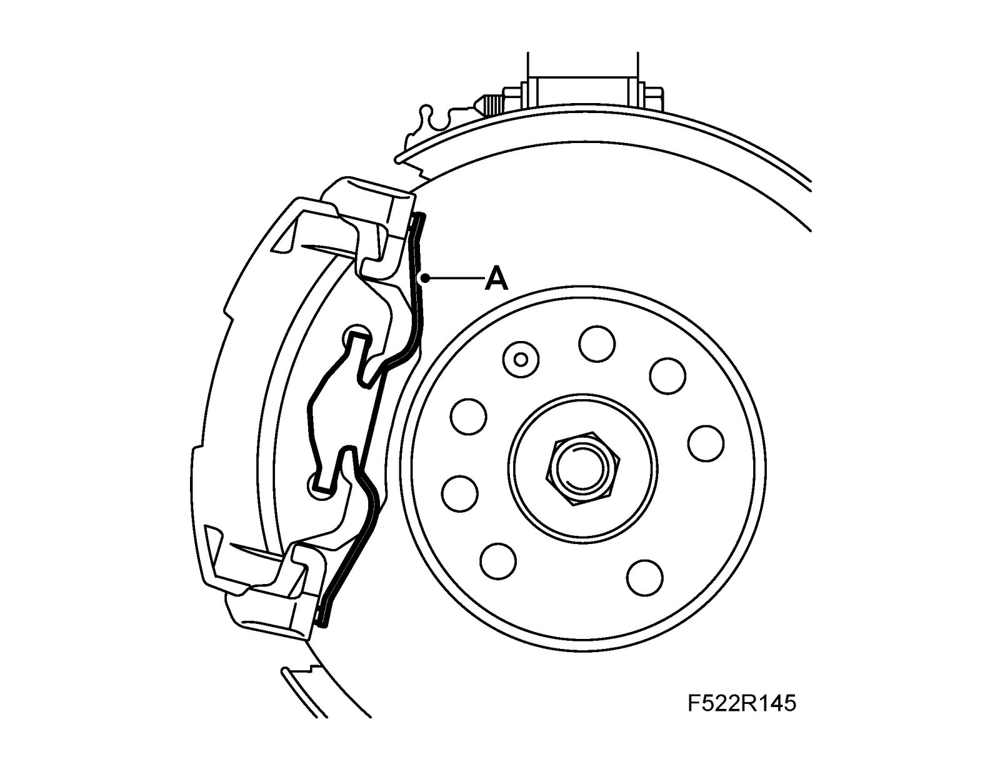
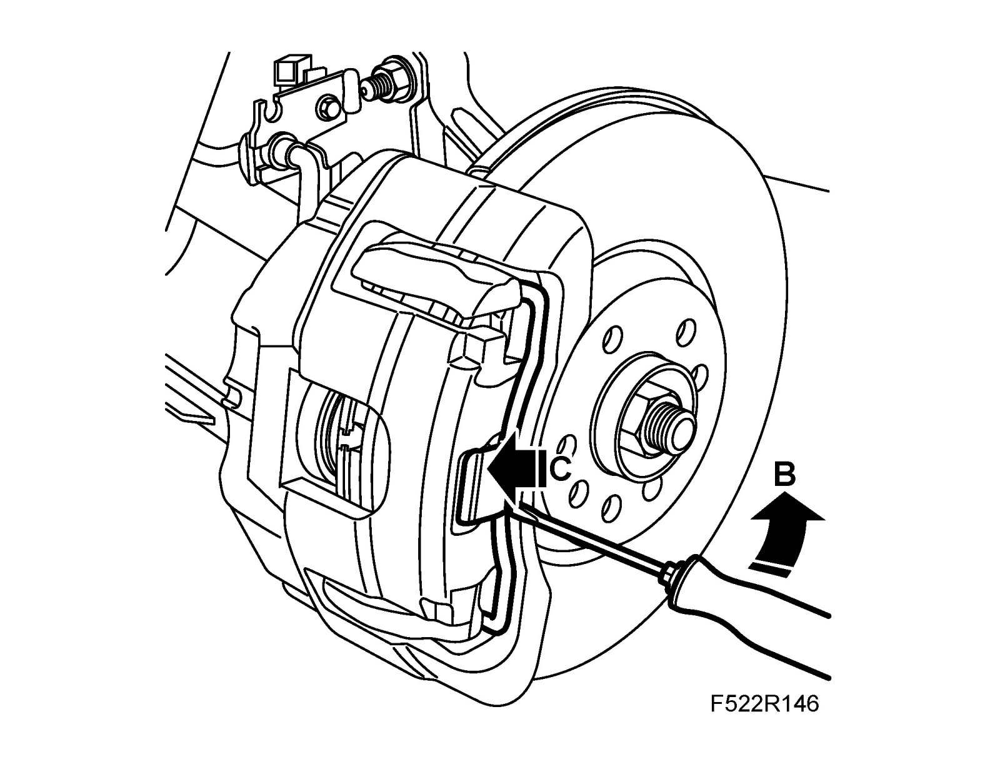
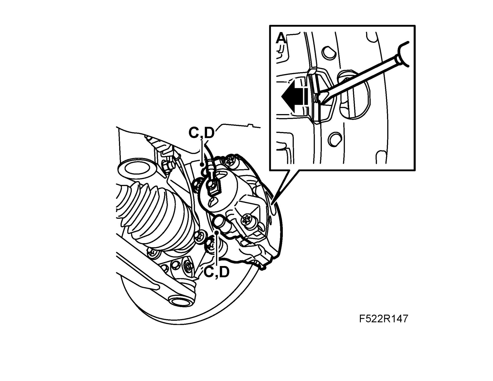
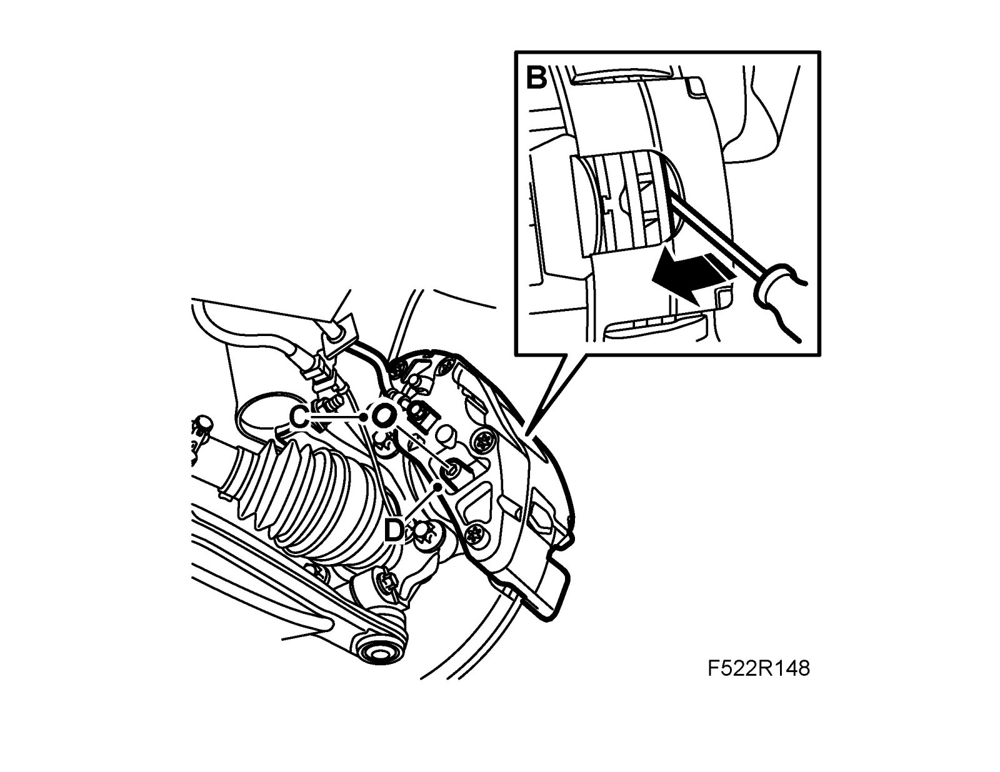
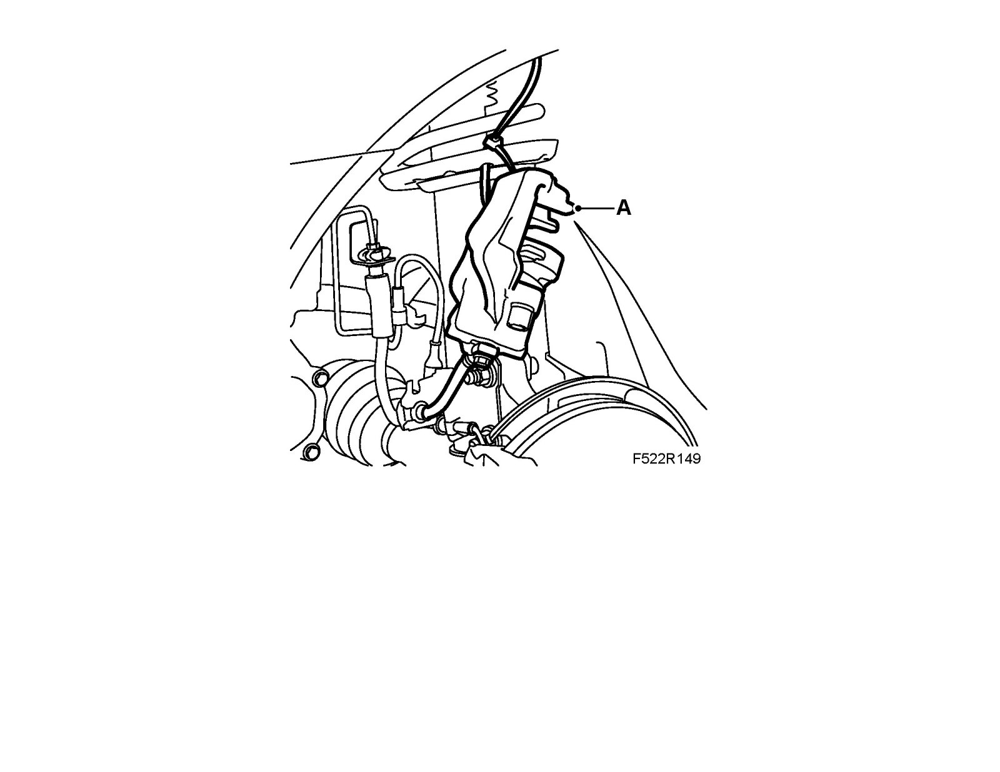
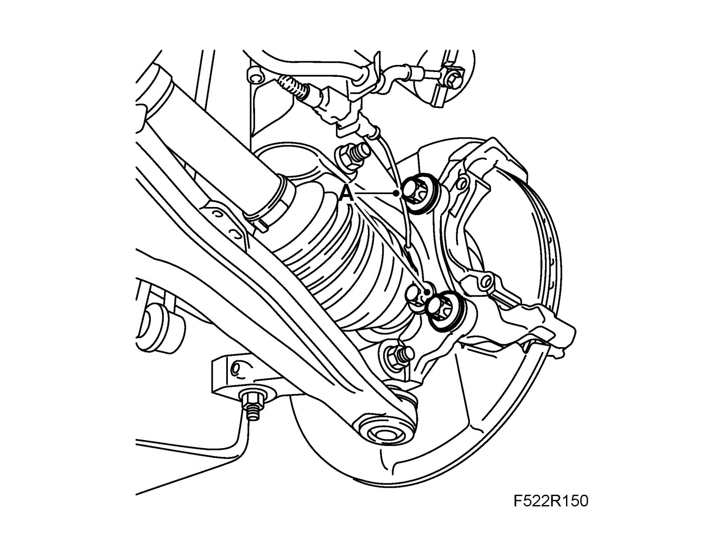
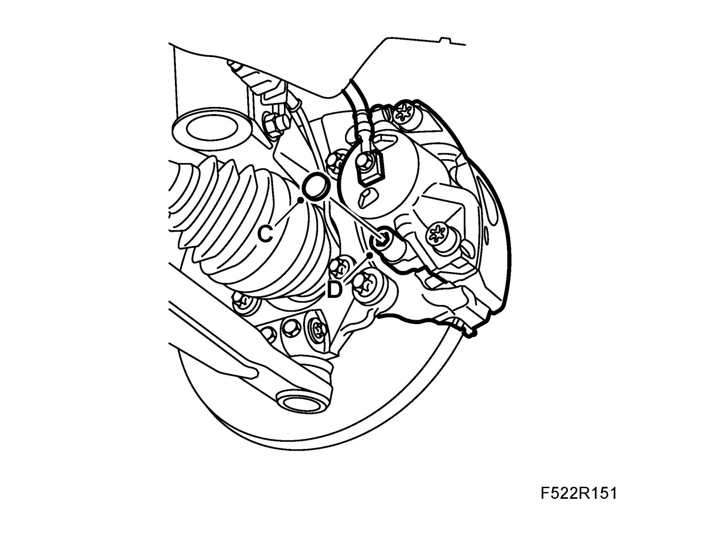
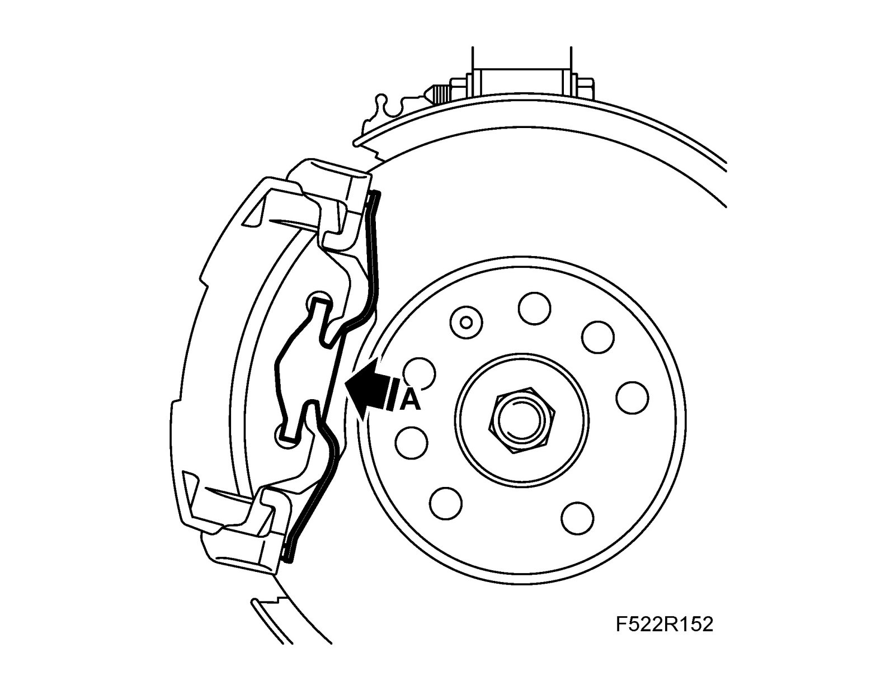
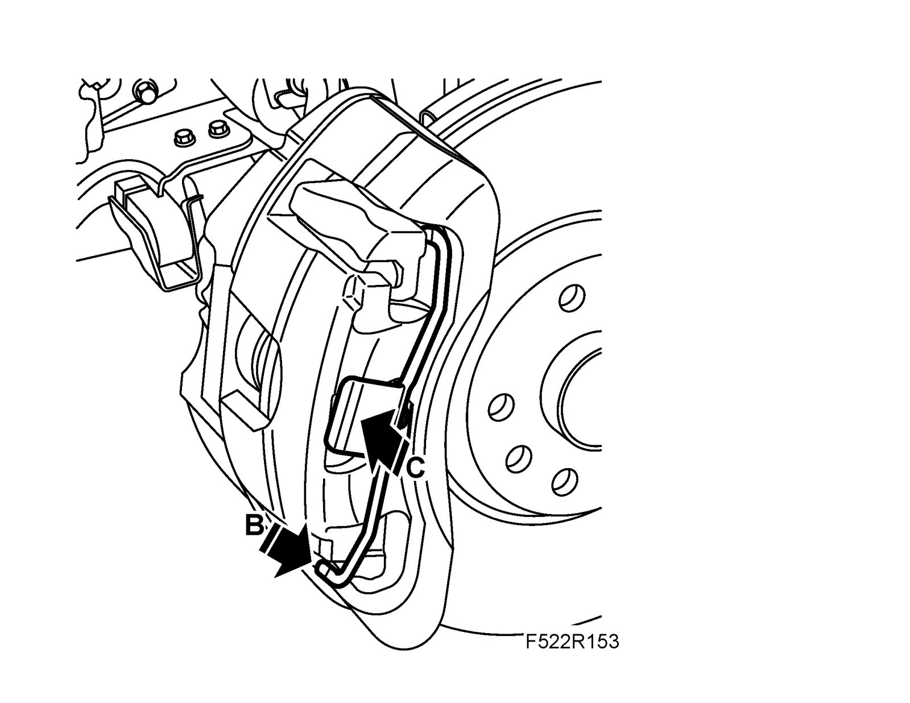

Hydraulic Body, Holder, Front
Hydraulic body, holder, frontTo remove
1. Raise the car.
2. Remove the wheel.
3. Remove the retaining spring from the brake caliper:
^ Level 1, 2 and 4: Prize with a screwdriver between the hydraulic body and the retaining spring (A).

^ Level 3: Prize away the retaining spring (B) with a screwdriver and hold the spring's plate (C).

4. Press in the piston:
^ Level 1, 2 and 4: Press in the brake pad (A) by prizing with a screwdriver.

^ Level 3: Prize between the brake disc and the brake caliper (B) using a screwdriver.

5. Remove the protective covers (C), the hydraulic body guide pins (D) and lift off the hydraulic body.
6. Hang up the hydraulic body (A) in the spring using a cable tie.

7. Remove the outer brake pad.
8. Remove the retaining screws (A) for the brake caliper holder and lift out the holder.

To fit
1. Fit the brake caliper holder (A) to the steering swivel member. Apply threadlock using Loctite 242.
Tightening torque 210 Nm +30° Nm (155 lbf ft +30°)
Ill: Same as Remove, point 7
2. Fit the outer brake pad.
3. Cut off the cable tie and align the hydraulic body. Fit the guide pins (D) and protective covers (C).
Tightening torque: 28 Nm (21 lbf ft)

4. Fit the retaining spring to the brake caliper:
^ Level 1, 2 and 4: Align the outer contact surfaces against the bracket and press the centre of the clip (A).

^ Level 3: Position the spring at the top and centre, and then press in at the bottom (B). Check that the locking lugs (C) align correctly.

5. Fit the wheel.
6. Lower the car.
7. Depress the brake pedal repeatedly in order to press out the brake pistons.